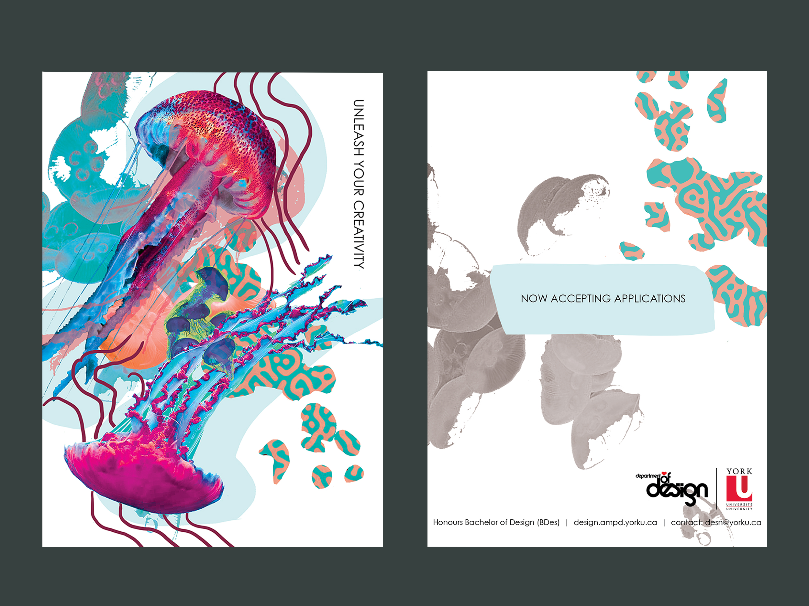
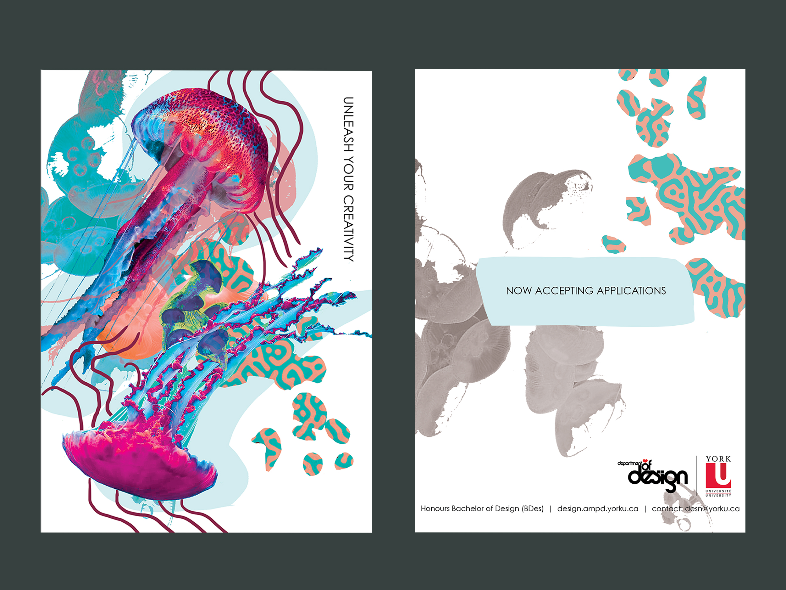
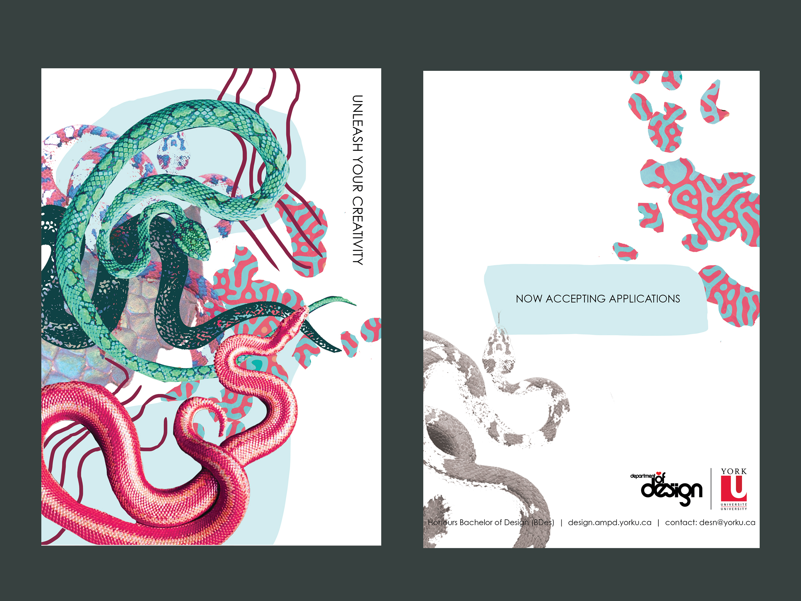
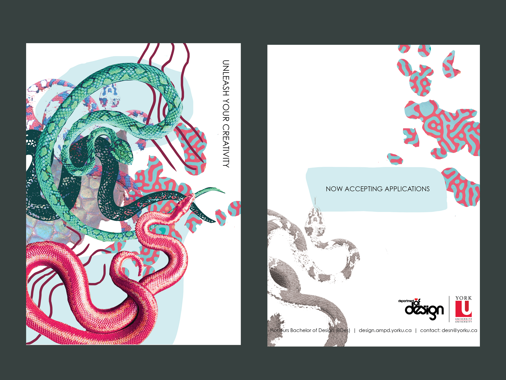

Series of three promotional postcards for York University’s Bachelor of Design program. I went with the tagline ‘Unleash Your Creativity’ and used an animal theme for the graphics. I chose snakes, butterflies and jellyfish because in nature multiple variations can be found with different patterns and colours of each animal. This is intended to symbolize how each designer has their own style and can express themselves in different ways. I used a collage style to further enhance this message to reflect the various ways graphics can be used. Animals also tend to be wild and unpredictable, this is a characteristic that is beneficial for a new designer to have when coming into the DSEN program.
 

 
